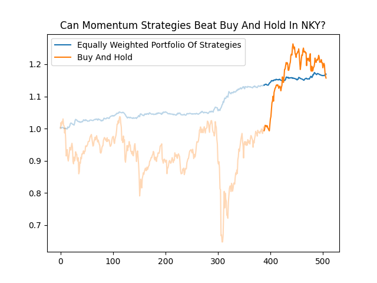
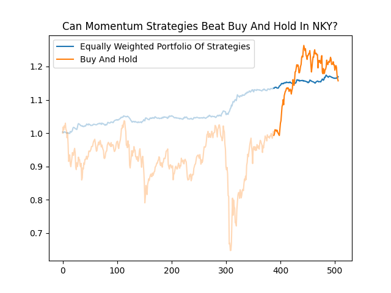

Introduction
In the previous article, we have seen the backtest results on our momentum trading strategy, which indicates that those 4 markets have statistically significant trading profit on short momentum. However, those are in-sample results, we can fit many good parameters on our trading model, which can generate a good equity curve easily. In this article, we are going to perform an out-of-sample test to criticize our trading model, whether we can earn sustain trading profits using the parameters we chose in the last article.
Data
We will update our data to 20210701. The in-sample period of our backtest starts from 20180102 to 20200930, therefore we have approximately 180 days of intraday minute by minute data for each market. As we discussed in the last article, we will trade index futures of HSI (hi1), NIKKEI (no1), KOSPI2 (km1), and A50 (xu1).
hi1 data from 20180103 to 20210701.Backtest results - Overview on hi1
We will perform a backtest on those parameters we chose in the last article. Firstly, let us look at the results of our trading rule on hi1. We chose a large range of parameters which are 12 to 24.
Most of the parameters are moving upward in the out-of-sample period. If we from an equally weighted portfolio those 7 parameters which trade 1 hi1 contract, then we can compare our portfolio of strategies to a buy and hold (BAH), and see whether the momentum strategy before cost can beat BAH.
The cumulative log return on our portfolio and BAH are 0.137439 and 0.066377, which we theoretically can beat the BAH in hi1 in an out-of-sample period.
Backtest results - long-short momentum strategy
In the previous article, we decomposed our momentum strategies into a long and short signal, and chose those absolute value of t statistic greater than 1.5, we found that most of the short signals outperform long signals, it might indicate that short momentum exists in those markets. Let us form a portfolio of strategies and take a look at the results.

As we can see, momentum strategies on KOSPI2 (km1) are not very well in the out-of-sample period, however, the cumulative log return of the others are higher than the in-sample test especially HSI and XINA50. Just like our previous section, we will compare our trading strategies to a BAH, hoping that our strategies can beat it.
 

The results show that the momentum strategies can only beat XINA50, furthermore, the standard deviation of return of momentum strategies are much lower than BAH in HSI, however, the most important metric is profitability.
Conclusion
This article shows the out-of-sample results on momentum trading strategies in various markets. Our trading strategies only outperform the index in XINA50. One reason momentum strategies underperform BAH is that markets are too extreme after the market crash in March of 2020, the world stock market recovery so quickly that they rebound from the bottom more than 100% in KOSPI2. Quantitative trading in the crash in March of 2020 and the after the crash is challenging since the responses of the markets are so unpredictable. The biggest concern of our trading strategies would be over-fitting, as result the strategies would not work in live trading.